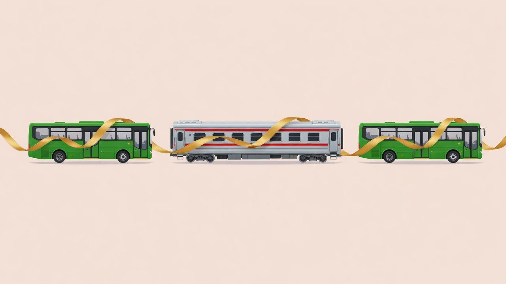

The charge is the distance, not the number of rides
On a stored-value card, a SimplyGo EZ-Link card, or a contactless bank card, basic buses and MRT/LRT trains share one distance fare. The system adds the rides into a single journey. You pay that distance once. You do not pay a fresh boarding fare at every door.
Cash on a bus is different. Cash is charged per ride, at a higher fare, and it does not join a train ride. MRT and LRT need a card or a phone wallet. Use the same card, or the same phone, for every tap in the journey. Two cards look like two people.

Same three rides. Two ways the card can see them.
The 45 minutes starts when you get off
For a bus and a train, or for two different buses, the transfer limit is 45 minutes. TransitLink’s own example makes the clock clear. A commuter alighted from bus 197 at 7.51am and boarded bus 63 at about 9.00am. The reader showed “New Ride”. More than 45 minutes had passed between getting off and the next boarding, so the second bus was a new journey.
Tap in for the next ride before those 45 minutes run out. A coffee can fit. A sit-down lunch usually cannot. Each gap is its own 45 minutes. The walk from the bus stop to the station gantry counts. So does the wait for the second bus after you leave the train.
A bus → MRT → bus that stays one journey
- Tap in on Bus A. The 2-hour clock starts.
- Tap out. The first 45-minute clock starts.
- Tap in on the MRT. 8 minutes, inside 45.
- Tap out. A new 45-minute clock starts.
- Tap in on Bus B. 15 minutes, inside 45. Last boarding is 50 minutes after the first.
The same alighting, boarded too late
Four limits, and they are not the same clock
Changing MRT or LRT lines inside the paid area is not one of these clocks. You stay in the system. There is no extra boarding fare. The 15 minutes matters only when you have stepped out through a fare gate.

What the saving looks like in dollars
Each separate journey pays the fare for its own distance, starting again from the bottom of the table. One stitched journey pays the fare for the combined distance, once. Short hops are where this matters. The bottom of the table is the expensive part to pay twice.
This example uses official adult card bands. It is not a surveyed route. If your two legs are each priced alone at these bands, and the combined journey falls in the longer band, the card fare is:
Two separate rides, or one journey
$2.66 − $1.75 = $0.91 kept on this pair of bands. Add a third short bus, still inside the rules, and you avoid a third $1.28 as well. The system’s distance is the distance it records for the path, which is not always the arithmetic sum of the legs. Check your stops in the LTA fare calculator before you plan a detour around a fare.
How to switch on purpose
Use the stitch when the direct ride is awkward, not when it makes the trip longer for its own sake. A bus to the nearest station, the train across town, and a bus for the last mile is the pattern. It is one fare if the clocks hold.
- Open the LTA fare calculator or MyTransport. Compare the direct ride with bus → MRT → bus. Keep the option whose total time still leaves a margin inside 45 minutes at each change.
- Note the time you will tap out, not the time the bus is due. A late bus eats the window from the front.
- At the station, walk to the gantry before you do anything else. The 45 minutes includes that walk.
- When you tap out of the train, look at the clock. The next bus must be boarded within 45 minutes, and it must be a different service number from the first bus.
- If the second bus is late, take the next service with a different number rather than miss the window. Do not reboard the same number, or its variant. Bus 98, 98A, and 98B do not transfer to each other.
Rail has a separate weekday discount. Tap in at any station before 7.45am, excluding public holidays, and the adult rail fare is 50 cents lower. That discount is on the rail table. It is not a reason to break a transfer. From 27 December 2025, a free first rail ride also exists for specific North East Line and Sengkang–Punggol LRT taps, before 7.30am or from 9.00am to 9.45am on weekdays. That scheme is not the island-wide transfer rule.
What splits the journey
| You did this | The card does this |
|---|---|
| Next tap-in is 46 minutes after you got off | New journey. A new distance fare starts. |
| You board the same bus number, or its A/B variant | New journey, even inside 45 minutes. |
| You tap out and back in at the same station | New journey, except the 15-minute line change at Bukit Panjang, Newton, or Tampines. |
| You walk to a different station and take longer than 15 minutes | New journey. |
| The last boarding is more than 2 hours after the first | New journey. On a train, the gate can refuse you. |
| You use a different card or a different phone | The rides never meet. Each card has its own journey. |
| Premium, shuttle, Sentosa, tourist, or other non-public buses | Not part of the distance-fare transfer. |
| You pay the bus driver in cash | That ride stands alone, at the cash fare. |
A monthly Bus, Train, or Hybrid Concession Pass is not in this stitch. The Public Transport Council lists those passes as transfers that do not qualify. The pass is already priced as a period ticket. Tap it anyway. A missed tap still causes trouble on the next ride.
A pocket check before you tap
Same card. Different bus number. Under 45 minutes from the last tap-out to this tap-in. Under 15 minutes if you left a station to enter another. Last boarding still inside 2 hours of the first. Fewer than five transfers already made.
If all six are true, the bus, the MRT, and the bus are one journey. You pay for how far you went. You do not pay for how many doors you used.
Sources
- Public Transport Council, Distance fares and transfer rules, updated 23 July 2026.
- LTA, Plan Your Journey, distance-fare criteria and the fare calculator.
- SimplyGo, Transfer fare rules, including the $2 admin charge when a rail journey passes two hours.
- SimplyGo, Adult fares, card table in force since 27 December 2025.
- TransitLink, Travel fares, including the bus 197 / bus 63 case where the reader showed “New Ride”.
- Ministry of Transport, 6 May 2026, why the station-to-station limit is 15 minutes and the bus limit is 45.
This note explains published fare rules. It is not a quote from your card. Your reader and the LTA fare calculator are the record of a particular trip.
Comments